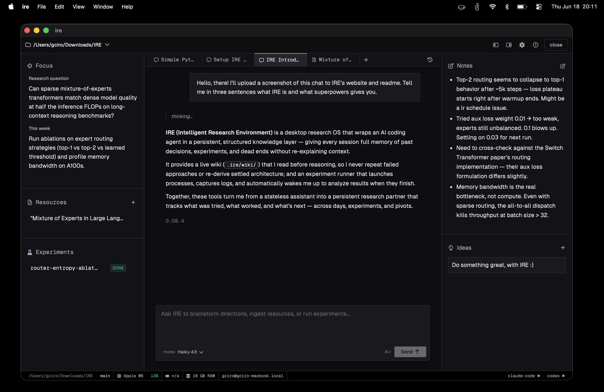

The Integrated Research Environment (IRE) is a desktop application built for researchers. Your code, literature, experiments, and AI live in one unified workspace — so you never start from scratch.

Every session starts with re-establishing state. What did I try? What failed? Why?
No persistent memory of insights, paper summaries, or rejected approaches — so AI suggestions repeat dead ends.
Fire off a long run, switch tasks, and forget about it. Results sit unreviewed.
The core research question gets buried under technical details and literature exploration.
A Git-tracked markdown wiki maintained automatically. Architectural decisions, failed approaches, and current blockers are selectively injected into the agent's context so it never forgets.
Fire off a long-running experiment and keep working. IRE monitors it as a detached process. When it finishes, the agent wakes up with full results and context attached, ready to continue.
IRE wraps coding agents with a native MCP bridge. AI agents can read your wiki, write findings, record memory, update your research pulse, and start experiments — not just chat.
Long-term memory for durable insights alongside short-term daily notes automatically injected into context.
IRE never collects or stores your research content. What leaves your device is only what you send to your AI provider — nothing else. Git is your backup and collaboration layer.
Each IRE workspace maps 1:1 to a Git repository. Your code, wiki, experiment logs, and AI state all live together in .ire/. Version-controlled from day one.
Every panel is purpose-built. Nothing is noise.
Your research question and weekly goal, always visible.
Indexed papers, articles, and API docs. Submit a URL or file and the agent summarises it into the wiki.
Streaming coding agents with real-time tool calls, experiment status, and full wiki access. Supports multiple tabs.
Editable markdown notes that the agent can read and write. Click to inline-edit.
A draggable bullet list for capturing hypotheses and next steps.
Built with Tauri and a Rust backend — lightweight, native, fast.
Or build from source — Rust + Node.js required.